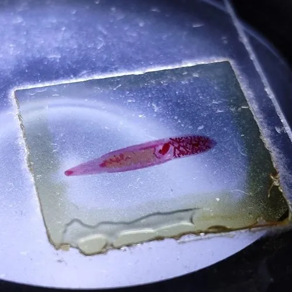

其他无脊椎动物 · 动物界
华枝睾吸虫 Clonorchis sinensis

俗称肝吸虫的寄生虫，以淡水螺和淡水鱼为中间宿主，人生食淡水鱼后可能感染，需重视饮食卫生防护。
- 分类
- 门扁形动物门纲吸虫纲目复殖目科后睾吸虫科属枝睾吸虫属
- 栖息环境
- 寄生在人或哺乳动物胆管内，幼虫阶段在淡水螺和鱼虾体内
- 地理分布
- 中国南方、朝鲜半岛和越南北部等流行区
- 保护级别
- 暂无评估；重要寄生虫，需重视公共卫生
物种志
华枝睾吸虫成虫体长约 1–2.5 cm，身体扁平，呈柳叶形，前端有口吸盘，腹面有腹吸盘，体内有分枝状的睾丸，因此得名；它寄生在人或哺乳动物的胆管内，靠吸盘附着并吸食胆汁和血液。
它的生活史需要两个中间宿主：虫卵随粪便排出，被淡水螺吞食后发育为尾蚴，尾蚴钻入淡水鱼、虾体内形成囊蚴；人若生食或半生食含囊蚴的淡水鱼虾，就可能感染，囊蚴在人体内发育为成虫，引起肝吸虫病，出现腹痛、腹泻、胆管炎等症状，长期感染还与胆管癌有关。华枝睾吸虫主要流行于中国南方、朝鲜半岛和越南北部。预防的关键是把淡水鱼虾彻底煮熟，不食用生鱼片和腌制生鱼，处理生熟食材的砧板刀具要分开，粪便无害化处理和消灭中间宿主也有助于控制传播。
形态与习性
- 食性寄生在胆管内，吸食胆汁和血液
- 体长成虫约 1–2.5 cm
- 中间宿主淡水螺为第一中间宿主，淡水鱼虾为第二中间宿主
- 感染途径人生食或半生食含囊蚴的淡水鱼虾
- 危害引起肝吸虫病，长期感染与胆管癌有关
- 预防淡水鱼虾彻底煮熟，生熟砧板分开，粪便无害化处理
趣味知识
- 华枝睾吸虫的成虫寄生在人体的胆管里，俗称肝吸虫。
- 生吃淡水鱼片是感染肝吸虫的主要途径，淡水鱼虾要彻底煮熟。
- 处理生鱼和熟食的砧板、刀具要分开，避免交叉污染。